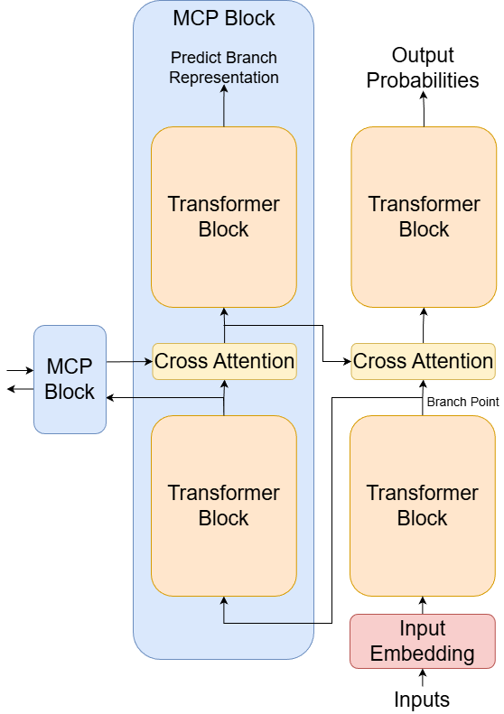

Research Project
Predictive Coding Objectives
A modular architecture idea for scaling the number of training objectives by predicting future latent states.
I have been working on a framework to use predictive coding style objectives to automatically scale the number of simultaneous objectives a model is training on. This blog post outlines the history of this idea, its current state, and future work.
This project started out as an inquiry into synthetic data augmentation. I had the idea of having a system of neural networks all contributing a unique direction to data augmentation, and I was thinking about coordinating these networks with a high level reward signal to encourage useful augmentations. But as I drew this out, I realized that with higher level guidance, we could operate within latent spaces, using higher level rewards to guide data augmentation networks to operate within the latent space and generate data for latent supervision.
At the same time I was reading into basic neuroscience and cortical columns. I realized that the modular structure of cortical columns mapped elegantly to my idea of modular networks performing latent supervision with a higher level reward signal to coordinate them. This also provided a natural framework for organizing the higher order reward signal: predictive coding. Each network module provides supervision to a lower order module, creating a hierarchy of modules abstracting and modifying data to produce effective predictions.
Predictive Coding
Neuroscientists believe that the brain learns using predictive coding: a hierarchical system where higher-level neural circuits predict lower-level circuit activity, then update based on prediction errors. This is an elegant, local, easily scalable structure. More brain tissue also means more capacity to supervise lower order circuits.
What I Am Trying to Do
The core idea is to fork the residual stream of a model, and have a module predict the next token in the sequence in the latent space at the fork. This module can itself have its residuals forked in the same manner, and we can attend to and join the representations generated in this module.
I have currently tested using cross-attention to join the representations, mimicking how top-down predictions in the brain modulate bottom-up processing. The goal is to, by forcing part of the network to anticipate its own future states, encourage more abstract, transferable representations - potentially improving sample efficiency and allowing models to extract more learning signal from limited data.
Ultimately, this project is an attempt to design a system that can arbitrarily scale in the direction of number of training objectives, with each modular predictive coding objective serving as a single objective.

Results
Training a small model on WikiText-103, I observed several encouraging signs. The MPC architecture did not break anything: the model learned to do language modeling. More interestingly, ablation studies showed the beta stream was contributing: removing its cross-attention connection measurably increased loss.
Gradient flow analysis revealed a compelling pattern. Early in training, the model essentially ignored the forked stream, which is the network predicting future latents. Around step 1000, gradients recovered and continued growing, suggesting the predictive coding pathway was becoming increasingly integrated into the model's computations.
The problem became clear when I tested removing the core predictive coding objective while keeping the rest of the architecture the same. With the basic setup I had, performance removing the objective was equivalent to the baseline with the objective. The fact that the objective did not take anything away from the model is encouraging, but the goal is to improve performance.
I think a real solution looks like some operation that fundamentally compresses the representations being predicted, dispensing with noise and leaving a salient target to predict. My architecture asks the model to predict future states at full resolution, noise and all, and I need to modify it to allow it to predict only the underlying structure.
I remain convinced that multi-objective training and predictive structures have untapped potential for language models. Future directions I am considering:
- Forcing compression through dimensionality reduction in the prediction target.
- Forcing compression through sparsity in the prediction target.